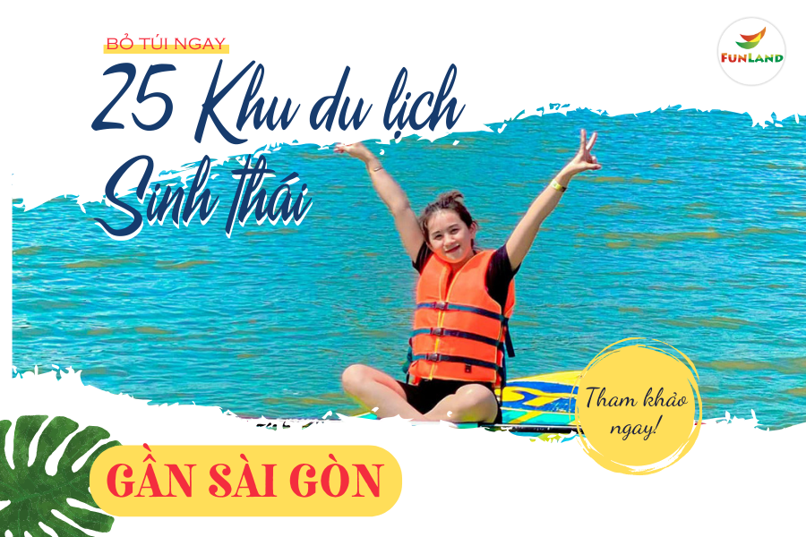

Bỏ Túi Ngay 25 Khu Du Lịch Sinh Thái Gần Sài Gòn Lý Tưởng Nhất Năm Nay
30/10/2023
Bạn đang loay hoay tìm kiếm địa điểm nghỉ dưỡng, vui chơi vào cuối tuần này? Nếu vẫn còn đắn đo suy nghĩ không biết đâu là điểm đến lý tưởng, thì hãy cùng theo chân Funland - Tre Việt điểm qua 25 khu du lịch sinh thái gần Sài Gòn trong bài viết này nhé!

1. Khu Du Lịch Sinh Thái Gần Sài Gòn Ở Đồng Nai
1.1. Khu du lịch sinh thái Funland - Tre Việt
- Địa chỉ: 25 Phan Văn Đáng, Ấp Phước Lương, Xã Phú Hữu, Huyện Nhơn Trạch, Đồng Nai
- Giá vé: Người lớn: 150.000VNĐ/người, Trẻ em: 100.000VNĐ/người, Miễn phí cho trẻ em dưới 0.9m và người trên 80 tuổi
- Ưu điểm: Không gian sinh thái, cảnh quan đẹp, và có khu vui chơi nước, sân cát là địa điểm tổ chức team building lý tưởng.

Không chỉ là một khu du lịch sinh thái gần Sài Gòn, khu du lịch sinh thái Funland - Tre Việt còn được biết đến như mảnh đất thiên đường bởi sự tích hợp giữa nét mộc mạc, bình dị của miền sông nước Nam Bộ, mà còn có cả khu vui chơi nước, các trò chơi hoạt động mang hơi hướng hiện đại.
Funland - Tre Việt sở hữu khuôn viên sinh thái rộng lớn gồm hồ bơi, sân cát, bãi cỏ, và hàng loạt kiến trúc độc đáo khác. Đến với nơi đây, du khách sẽ có cơ hội trải nghiệm hàng loạt trò chơi giải trí như: phao bút chì, đu dây Tarzan, phao bay, xe đạp qua cầu khỉ,...

Bên cạnh các hoạt động có chút mạo hiểm, Khu du lịch sinh thái gần Sài Gòn Funland - Việt còn có không gian thiên nhiên xanh mát, rộng rãi bao gồm các hoạt động: trồng cây, hái rau, mò cá, tham quan sở thú,... Du khách còn có cơ hội thưởng thức ẩm thực mang đậm chất miền quê Nam Bộ, các gói dịch vụ Buffet ở đây luôn đi kèm giữa chất lượng và giá cả.
Với những dịch vụ cùng hoạt động chất lượng, Khu du lịch Funland - Tre Việt chắc chắn sẽ lưu lại những phút giây nghỉ dưỡng ý nghĩa, khó quên trong lòng mỗi du khách đặt chân tới nơi đây.
Tham khảo ngay: Tại đây
1.2. Khu du lịch sinh thái Suối Tre
- Địa điểm: Suối Tre, Thống Nhất, Đồng Nai
- Giá vé tham khảo: Miễn phí
- Ưu điểm: Giữ được nguyên vẹn hệ sinh thái, nét mộc mạc, cổ điển của thiên nhiên

Là một khu du lịch sinh thái khá đặc biệt khi có nằm ở địa hình cao hơn mực nước biển, vì vậy khí hậu nơi đây luôn trong lành, mát mẻ và tươi mát. Còn một đặc điểm góp phần tạo nên nét cổ điển, mộc mạc của khu du lịch sinh thái Suối Tre là nguồn gốc, lịch sử của kiến trúc nơi đây.

Với những kiến trúc, di tích đều được lưu giữ lại từ thời người Pháp, nơi đây hết sức phù hợp với những du khách yêu thiên nhiên, thích trải nghiệm cuộc sống chậm rãi, yên bình.
1.3. Khu du lịch sinh thái Suối Mơ
- Địa điểm: 9 Trà Cổ,Tân Phú, Đồng Nai
- Giá vé tham khảo: Miễn phí
- Ưu điểm: Không gian rộng rãi, phong cảnh thác nước độc đáo

Lại là một điểm đến được bảo tồn gần như nguyên vẹn những gì tới từ thiên nhiên trong danh sách 25 khu du lịch sinh thái gần Sài Gòn, khu du lịch sinh thái Suối Mơ có hệ sinh thái độc đáo gồm thác nước, suối, biển hồ rộng lợn.

Tại đây, du khách có thể trải nghiệm vô vàn hoạt động vui chơi nước giải trí như: moto nước, chèo thuyền SUP, thuyền Kayak,... Sau thời gian “cháy” hết mình với những trò chơi có đôi chút mạo hiểm, sẽ là hàng loạt động động nghỉ dưỡng nhẹ nhàng như Bar Coffee, cắm trại,.... được tổ hợp hết trong khuôn viên của Suối Mơ.
1.4. Khu du lịch sinh thái Vườn Xoài
- Địa điểm: Số 537, đường Đinh Quang Ân, ấp Tân Cang, xã Phước Ân, thành phố Biên Hòa, tỉnh Đồng Nai
- Giá vé tham khảo: 180.000VNĐ/người
- Ưu điểm: Có sở thú, không gian rộng rãi

Khu du lịch sinh thái gần Sài Gòn - Vườn Xoài là địa điểm du lịch sinh thái gần Sài Gòn phù hợp cho những gia đình có trẻ nhỏ, bởi quy mô sở thú rộng lớn, với đa dạng hơn 3000 loài thú cho du khách tham quan và trải nghiệm.

Bên cạnh hoạt động như tham quan sở thú, cho thú ăn,... Vườn Xoài còn có khu vực bể bơi, cầu trượt nước trên cao. Với sự đa dạng trong các hoạt động vui chơi, nghỉ dưỡng, khu du lịch vườn xoài hứa hẹn sẽ là khu du lịch sinh thái gần Sài Gòn đặc sắc.
1.5. Khu du lịch nghỉ dưỡng Thiền Tâm
- Địa điểm: 80 Võ Nguyên Giáp, Ấp Tân Cảng, Biên Hòa, Đồng Nai
- Giá vé tham khảo:
Tắm nước khoáng: Giá 120.000VNĐ/vé
Tắm bùn khoáng thiên nhiên + Hồ nước khoáng: 500.000VNĐ/vé (đi 6 người còn 440k)
Tắm thảo dược thiên nhiên + Hồ nước khoáng: 400.000VNĐ/vé còn 240.000VNĐ/người lớn và 174.000VNĐ/trẻ em
Gói bao gồm Tắm bùn khoáng + Tắm thảo dược + Tắm hồ nước khoáng còn 700.000VNĐ khi đi nhóm 6 người
- Ưu điểm: Mô hình nghỉ dưỡng đa dạng, tuyệt vời

Khu du lịch sinh thái gần Sài Gòn Thiền Tâm là điểm đến lý tưởng cho những chuyến du lịch ngắn. Dịch vụ nghỉ dưỡng đa dạng bao gồm tắm nước khoáng, tắm bùn khoáng thiên nhiên, tắm thảo dược thiên nhiên,... nhất định có thể giúp du khách hòa tan mọi lo toan và phiền não, tận hưởng sự thư thái trong lòng sau những ngày làm việc vất vả.

Không chỉ là khu nghỉ dưỡng, tới Thiền Tâm du khách có cơ hội hóa thân thành những người nông dân chân chính được trả công bằng voucher tham quan. Du khách được thực hiện các công việc như thu hoạch nấm, sản xuất bùn khoáng chăm sóc da hay dọn dẹp khuôn viên. Hãy cùng đến Thiền Tâm để có được những phút giây thú vị, và khó quên nhé!
2. Khu du lịch sinh thái gần Sài Gòn - Tây Ninh
2.1. Khu du lịch sinh thái Long Điền Sơn
- Địa điểm: Khu phố Ninh Thành, phường Ninh Sơn, Tây Ninh
- Giá vé tham khảo: Người lớn: 60.000VNĐ/người, Trẻ em (dưới 1m - 1m3): 40.000VNĐ/người
- Ưu điểm: Tổ hợp nghỉ dưỡng nhiều dịch vụ vui chơi, giải trí

Nếu bạn là một “tín đồ” của những bức hình đẹp, thì Long Điền Sơn sẽ là một điểm khu du lịch sinh thái gần Sài Gòn khiến bạn hài lòng và thích thú. Không gian rộng rãi, thoáng mát đa dạng mô hình hoạt động giải trí là những gì phải nhắc đến khi tới Long Điền Sơn.

Tới đây, du khách như bước chân vào một “thành phố thu nhỏ” với đầy đủ dịch vụ bao gồm: buffet cuối tuần, ẩm thực miền quê, sân khấu ca nhạc, nghệ thuật nhạc nước, xe đua F1, rạp phim 5D,... Với tổ hợp dịch vụ nghỉ dưỡng, vui chơi, Long Điền Sơn hứa hẹn sẽ là điểm đến thu hút khách nhất vào mỗi cuối tuần.
2.2. Khu du lịch Núi Bà Đen
- Địa điểm: xã Phan, huyện Dương Minh Châu, thành phố Tây Ninh
- Giá vé tham khảo: Miễn phí vé vào cửa
Cáp treo một chiều: Người lớn: 140.000VNĐ/người, Trẻ em: 80.000VNĐ/người.
Cáp treo khứ hồi: Người lớn: 250.000VNĐ/người, Trẻ em: 150.000VNĐ/người.
- Ưu điểm: Kết hợp giữa tâm linh và du lịch sinh thái
- Nhược điểm: Quá trình leo núi khá nguy hiểm

“Đệ nhất Thiên Sơn” là cái tên được du khách rỉ tai nhau khi nhắc tới khu du lịch Núi Bà Đen. Sự kết hợp độc đáo giữa tâm linh cùng du lịch trải nghiệm, du khách sẽ có cơ hội leo lên “nóc nhà Nam Bộ” tươi đẹp, hùng vĩ sau khi lễ phật tại ngôi chùa Bà Đen thiêng liêng.

“Thiên đường săn mây” một cái tên chắc chắn mỗi du khách bước chân tới đây sẽ phải thốt lên khi được chiêm ngưỡng khung cảnh từ đỉnh núi. Không chỉ có địa thế đặc biệt, độc đáo, không gian sinh thái cùng những hoạt động giải trí nơi đây cũng sẽ đem lại cho du khách những kỉ niệm đặc sắc, khó quên.
2.3. Khu du lịch sinh thái Suối Trúc
- Địa điểm: Xã Định Thành, huyện Dầu Tiếng, tỉnh Bình Dương (tiếp giáp 3 tỉnh Bình Dương, Bình Phước và Tây Ninh)
- Giá vé tham khảo: Miễn phí
- Ưu điểm: Không gian sinh thái nguyên vẹn, bảo tồn từ thiên nhiên

Khu du lịch sinh thái Suối Trúc là một trong các khu du lịch sinh thái gần Sài Gòn hút khách nhất. Nơi đây đặc biệt phù hợp với những du khách đam mê khám phá, trải nghiệm bởi Suối Trúc vẫn chưa được chú trọng khai thác cho mục đích du lịch.

Du khách tới đây nhất định sẽ phải nán lại ít lâu, bởi cảnh vật mộc mạc mà không thiếu phần nên thơ bởi rừng trúc xanh ngát trải dài hai bên bờ dòng suối trong xanh, mát lành. Vậy bạn còn chần chờ gì nữa mà không lập team cùng nhau tới Suối Trúc vào cuối tuần này.
2.4. Khu du lịch sinh thái Long Trung
- Địa điểm: Tổ 7, ấp Long Trung, phường Long Thành Trung, thị xã Hòa Thành, tỉnh Tây Ninh
- Giá vé tham khảo: 100.000VNĐ - 150.000VNĐ/người
- Ưu điểm: Kiến trúc độc đáo, thú vị

Long Trung sẽ là điểm đến tiếp theo trong danh sách các khu du lịch sinh thái gần Sài Gòn đẹp, lý tưởng nhất. Đến Tây Ninh, mà không ghé qua Long Trung thì có lẽ bạn đã thực sự mắc phải sai lầm.

Lối kiến trúc độc đáo gồm nhiều nhà chòi tre được nối với nhau thông qua các cây cầu gỗ nằm trên con kênh. Ngoài ra,khi vào mùa, đầm sen nơi đây rực nở rộ hồng lung linh, đặc sắc đến rung động lòng người. Hãy đến Long Trung ngay vào cuối tuần này, để có được trải nghiệm thú vị, cùng những bức ảnh “triệu view” nhé.
2.5. Khu du lịch sinh thái Bàu Cà Na
- Địa điểm: 22 đường Lý Thường Kiệt, thuộc Hoà Thành, tỉnh Tây Ninh
- Giá vé tham khảo: 30.000VNĐ - 100.000VNĐ/người
- Ưu điểm: Tổ hợp dịch vụ, hoạt động giải trí rất đa dạng

Không gian rộng lớn lên tới 50.000m2 là vài từ ngắn ngủi để miêu tả về sự tiện ích, rộng lớn và quy mô của khu du lịch sinh thái Bàu Cà Na. Với diện tích rộng lớn bậc nhất trong danh sách các khu du lịch sinh thái gần Sài Gòn, Bàu Cà Na là tổ hợp đầy đủ mọi dịch vụ, hoạt động bao gồm: hồ bơi, khu vui chơi ngoài trời, khu vui chơi trẻ em, karaoke, trung tâm tổ chức sự kiện, tennis, gym,...

Nơi đây luôn là một địa điểm du lịch sinh thái gần Sài Gòn lý tưởng, hút khách bậc nhất. Chắc hẳn qua những thông tin, kinh nghiệm Funland - Tre Việt cung cấp, bạn đã biết nên tới đâu vào cuối tuần này khi đặt chân tới Tây Ninh rồi chứ?
3. Khu du lịch sinh thái gần Sài Gòn - Thành phố Hồ Chí Minh
3.1. Khu du lịch sinh thái ven sông Bình Mỹ Củ Chi
- Địa điểm: 22 Đường Số 179, Bình Mỹ, Củ Chi, Thành phố Hồ Chí Minh
- Giá vé:
Tàu du lịch 48 chỗ: Khoảng 30.000VNĐ/vé/người, miễn phí cho trẻ em dưới 10 tuổi
Ghe gỗ 5 người: Khoảng 60.000 đồng/nửa tiếng, có phao an toàn
Ghe gỗ 8 người: Khoảng 80.000 đồng/nửa tiếng, có phao an toàn
- Ưu điểm: Nằm ngay tại Thành phố Hồ Chí Minh

Khu du lịch sinh thái ven sông Bình Mỹ, nơi có không gian thiên nhiên mộc mạc, bình dị mang đậm nét miền sông nước Nam Bộ. Bình Mỹ sở hữu kiến trúc hơi hướng cổ xưa thân thuộc như: chòi tranh, ao làng, cầu khỉ,...

Đến với khu du lịch sinh thái Bình Mỹ, du khách nhất định sẽ lưu giữ lại được những phút giây trải nghiệm thư thái, tuyệt vời cùng hoàn cảnh thiên nhiên và cảnh vật nơi đây.
3.2. Khu du lịch sinh thái Tân Cảng
- Địa điểm: A100 Ung Văn Khiêm, Phường 25, Quận Bình Thanh, Thành phố Hồ Chí Minh
- Giá vé tham khảo: Vé vào cổng miễn phí, Giá dịch vụ: 100.000 - 1.000.000VNĐ
- Ưu điểm: Không gian sinh thái rộng rãi, thoáng mát

Chỉ với hơn 10 phút di chuyển từ trung tâm Thành phố Hồ Chí Minh, khu du lịch sinh thái Tân Cảng có địa thế đặc biệt nằm trải dài cạnh bờ sông Sài Gòn. Chính vì vậy, không gian sinh thái rộng rãi, đặc sắc nơi đây luôn được ủng hộ bởi khí hậu trong lành, mát mẻ.

Du khách đặt chân tới khu du lịch sinh thái gần Sài Gòn Tân Cảng, không chỉ được trải nghiệm không gian sinh thái tươi mát, trong lành mà còn được thưởng thức nét đặc sắc ẩm thực mang đủ bản sắc từ Á - Âu, Bắc - Trung - Nam. Chúc bạn có một chuyến du lịch tuyệt vời tại Tân Cảng vào cuối tuần này!
3.3. Khu du lịch Bến Xưa
- Địa điểm: 39A Hà Huy Giáp, Phường Thạnh Lộc, Quận 12, Thành phố Hồ Chí Minh
- Giá vé tham khảo: Miễn phí vé vào cửa
Giá vé hồ bơi: 85.000VNĐ/ người lớn; 55.000VNĐ/ trẻ em.
Giá vé buffet ăn uống: 328.000 VNĐ/ người lớn; 95.000 VNĐ/ trẻ em.
Giá vé Free Flow bia tươi: 80.000 VNĐ/ người/ bia tươi; 120.000 VNĐ/ người/ rượu vang.
- Ưu điểm: Nằm gần trung tâm Sài Gòn, rộng rãi, thoáng mát

“5 sao” là cụm từ được nhắc đến khi nhắc tới dịch vụ nghỉ dưỡng tại Bến Xưa. Nhà hàng chuẩn 5 sao cung cấp từ buffet đến gọi món, đa dạng nét ẩm thực từ Bắc - Trung - Nam.

Không gian sinh thái rộng lớn, thoáng mát cùng lối kiến trúc, hoa văn cổ kính, độc đáo khiến khu du lịch sinh thái Bến Xưa nhìn từ xa tựa như một tòa thành kiêu xa. Vậy bạn còn chần chờ gì nữa, mà không rủ cả hội tới đây để lấp đầy bộ nhớ chiếc điện thoại của mình bằng những tấm ảnh lộng lẫy triệu view nhỉ?
3.4. Khu du lịch Long Island
- Địa điểm: 173 Long Thuận, P. Long Phước, Quận 9, TP.HCM
- Giá vé tham khảo: 100.000VNĐ/người
- Ưu điểm: Không gian rộng rãi, kiến trúc độc lạ, nhiều view chụp ảnh

“Thủ đô London” hoa lệ giữa lòng Sài Gòn - Khu du lịch Island có không gian cùng lối kiến trúc độc đáo, khi kết hợp giữa hệ sinh thái rộng lớn, xanh mát và tòa nhà cổ kính, hoa lệ mang đậm nét “trời Âu”. Do đó nơi đây luôn là địa điểm khu du lịch sinh thái gần Sài Gòn được săn đón bậc nhất của những tín đồ mê chụp ảnh.

4. Khu du lịch sinh thái gần Sài Gòn - Cần Thơ
4.1. Khu du lịch sinh thái Mỹ Khánh
- Địa chỉ: 335 Lộ Vòng Cung, ấp Nhơn Mỹ, xã Mỹ Khánh, huyện Phong Điền, thành phố Cần Thơ
- Giá vé tham khảo: Người lớn: 99.000VNĐ/người, Trẻ em: 50.000VNĐ/người (cao 1m – 1m3)
- Ưu điểm: Được trải nghiệm thực tế các hoạt động thú vị, đặc sắc

Phong tục và văn hóa Nam Bộ sẽ được du khách tận hưởng qua những hoạt động hấp dẫn tại Khu du lịch Mỹ Khánh Cần Thơ. Du khách sẽ có dịp ngắm nhìn những ngôi nhà cổ mang đậm nét kiến trúc Nam Bộ, tìm hiểu cách làm và thử những món ăn đặc trưng của Cần Thơ như hủ tiếu, rượu, bánh tráng.

Ngoài ra, du khách còn được trải nghiệm hoạt động chỉ riêng Mỹ Khánh sở hữu đó là một ngày làm điền chủ. Trong quá trình này, du khách sẽ được hóa thân làm điền chủ, trải nghiệm sinh hoạt, cuộc sống mà điền chủ thời xưa có được. Vậy bạn còn chần chờ gì nữa mà không tới ngay khu du lịch sinh thái Mỹ Khánh để có cơ hội trải nghiệm những hoạt động thú vị này nhỉ?
4.2. Khu du lịch sinh thái Cồn Ấu
- Địa điểm: Phường Hưng Lợi, Quận Cái Răng, Thành phố Cần Thơ
- Giá vé tham khảo: Miễn phí vé vào cửa
- Ưu điểm: Không gian sinh thái xanh mát, rộng rãi
- Nhược điểm: Hơi nhiều muỗi nếu đi vào mùa mưa

Đến với khu du lịch sinh thái gần Sài Gòn - Cồn Ấu, du khách như được không gian xanh mát tĩnh lặng cùng khung cảnh cây cối, rặng bần phủ rợp xanh mát. Khu du lịch sinh thái Cồn Ấu nằm gọn trong khuôn viên 30ha, và giữ được nguyên vẹn những gì mộc mạc, bình dị và đơn sơ nhất từ thiên nhiên. Đó chắc chắn sẽ là một điểm cộng đối với những bạn ưa thích những chuyến du lịch nghỉ dưỡng yên bình, thư thái sau thời gian dài làm việc mệt mỏi.

4.3. Khu du lịch sinh thái Cồn Sơn
- Địa điểm: Khu vực I, Phường Bùi Hữu Nghĩa, Quận Bình Thủy, Cần Thơ
- Giá vé tham khảo: 100.000VNĐ - 200.000VNĐ/người
- Ưu điểm: Được trải nghiệm các hoạt động miền quê Nam Bộ

Làng du lịch sinh thái miệt vườn Cồn Sơn được du khách yêu thích bởi những hoạt động dân dã, đầy trải nghiệm. Du khách tới đây, không thể không biết đến bè cá Koi Bảy Bon, hoạt động tát mương bắt cá, xem cá lóc bay,... , đều là những khu vực check-in “đáng đồng tiền”, thú vị.

Tiến sâu vào bên trong miệt vườn Cồn Sơn sẽ là vườn cây đa dạng các loại cây ăn quả, chỉ với một mức chi phí nhỏ, du khách có thể trải nghiệm ngay độ tươi mát, ngọt ngào của trái cây ngay tại vườn.
5. Khu du lịch sinh thái gần Sài Gòn - Bình Dương
5.1. Khu du lịch sinh thái Hồ Nam
- Địa điểm: Ấp Phước Thái, Xã Thái Hòa, Nam Tân Uyên, Tỉnh Bình Dương
- Giá vé tham khảo: Miễn phí vé vào cửa
- Ưu điểm: Không gian rộng rãi, khí hậu êm dịu
- Nhược điểm: Giá dịch vụ hơi mắc

Du lịch sinh thái nghỉ dưỡng Hồ Nam là sự kết hợp độc đáo giữa bản sắc miền quê mộc mạc và hiện đại, xa xỉ. Sau thời gian “cháy” hết mình trong hoạt động vui chơi tại hồ bơi, khu vui chơi trò trẻ em, đón chờ bạn là hoạt động nhẹ nhàng như đánh golf, hay thưởng thức ẩm thực miền quê Nam Bộ gần mặt hồ thoáng mát trong xanh.

Với những thông tin, kinh nghiệm về khu du lịch sinh thái gần Sài Gòn Hồ Nam được cung cấp, Funland - Tre Việt chúc bạn có một kỳ nghỉ tuyệt vời cùng người thân vào cuối tuần này nhé!
5.2. Khu du lịch sinh thái Thủy Châu
- Địa điểm: 55 ĐT743A, Bình An, Dĩ An, Bình Dương
- Giá vé tham khảo: Người lớn: 80.000VNĐ/người, Trẻ em: 40.000VNĐ/người, Miễn phí trẻ em dưới 1.2m
- Ưu điểm: Nước suối sạch, mát lành
- Nhược điểm: Hơi nhiều muỗi nếu đi vào mùa mưa

Điểm đến thứ hai trong danh sách khu du lịch sinh thái gần Sài Gòn - Bình Dương, khu du lịch sinh thái Thủy Châu sở hữu dòng suối trong xanh, mát lành cùng rặng cây phủ bóng bên bờ, tạo điều kiện tuyệt vời cho mỗi du khách tới đây thư giãn, nghỉ dưỡng.

Điểm khác biệt lớn nhất so với các khu du lịch sinh thái theo mô hình tắm suối khác là nước ở Thủy Châu đều được lọc theo công nghệ tiên tiến, hiện đại và sạch sẽ nhất. Càng ngâm mình trong dòng nước Thủy Châu mát lạnh, trong lành, du khách sẽ càng cảm nhận được sự thư thái từ trong tâm hồn mà thiên nhiên nơi đây đem lại.
5.3. Khu du lịch sinh thái Làng Tre Phú An
- Địa điểm: Đường 744, xã Phú An, huyện Bến Cát, tỉnh Bình Dương
- Giá vé tham khảo: Miễn phí
- Ưu điểm: Không gian sinh thái được bảo tồn nguyên vẹn từ thiên nhiên

Khu bảo tồn tre lớn nhất Việt Nam là những gì phải nhắc đến khi tới khu du lịch sinh thái Làng Tre Phú An. Với quy mô rộng lớn 1500 bụi tre gồm 300 giống loài đa dạng, nơi đây hết sức thích hợp cho du khách yêu thích sự khám phá, trải nghiệm và cảm nhận sự bình dị, chân thực nhất tới từ thiên nhiên. Chúc bạn có một kỳ nghỉ dưỡng tuyệt vời vào cuối tuần này!

6. Khu du lịch sinh thái gần Sài Gòn - Long An
6.1. Khu du lịch sinh thái Cát Tường Phú Sinh
- Địa điểm: Tỉnh lộ 9, xã Mỹ Hạnh, huyện Đức Hòa, tỉnh Long An
- Giá vé tham khảo: Miễn phí
- Ưu điểm: Kiến trúc độc đáo, nhiều góc chụp ảnh đẹp

Đi vòng quanh thế giới không còn là giấc mơ khi hàng loạt kiến trúc nổi tiếng, mỗi kiến trúc như một biểu tượng của một đất nước được hội tụ tại khu du lịch sinh thái Cát Tường Phú Sinh. Không cần phải đi đâu xa, tới đây, du khách có thể chiêm ngưỡng vẻ đẹp của tượng Nữ Thần Tự Do, tháp Eiffel, nhà hát Opera Sydney, tháp nghiêng Pisa,...
Chúc bạn có được những bức ảnh đắt giá tại khu du lịch sinh thái hoa lệ Cát Tường Phú Sinh vào cuối tuần này nhé!
6.2. Khu du lịch sinh thái Đất ngập nước Láng Sen
- Địa điểm: Xã Vĩnh Lợi - Vĩnh Đại, Huyện Tân Hưng, tỉnh Long An
- Giá vé tham khảo: Người lớn và trẻ em (trên 1m2): 50.000VNĐ/người, Trẻ em (dưới 1m2): Miễn phí
- Ưu điểm: Không gian sinh thái rộng rãi, thoáng mát

Mỗi du khách khi tới đây đều cảm giác được sự thư giãn, thoải mái bởi cảnh vật quá đỗi nên thơ, trữ tình. Không gian sinh thái rộng rãi, tươi mát hoàn toàn từ thiên nhiên chưa qua khai thác, hình ảnh đầm sen, đàn cò neo đậu là những gì du khách sẽ được chiêm ngưỡng khi chèo thuyền dọc theo khu du lịch này.

Với điều kiện sinh thái quý giá được ban tặng từ thiên
nhiên, Đất ngập nước Láng Sen hứa hẹn sẽ trở thành một địa điểm khu
du lịch sinh thái gần Sài Gòn thu hút đông đảo du
khách vào mỗi cuối tuần.
6.3. Khu du lịch sinh thái Làng Nổi Tân Lập
- Địa điểm: Đường quốc lộ 62, ấp 3, xã Tân Lập, huyện Mộc Hóa, tỉnh Long An
- Giá vé tham khảo: Miễn phí vé vào cổng, nhưng vẫn tốn những phí dịch vụ bên trong từ 50.000 - 100.000 đồng/người
- Ưu điểm: Không gian sinh thái lý tưởng, khí hậu mát mẻ

Khu du lịch sinh thái Làng Nổi Tân Lập đặc trưng bởi hệ sinh thái rừng tràm đặc trưng miền Tây. Du khách có thể tản bộ hoặc chèo thuyền thưởng ngoạn quanh rạch rừng nơi đây.
Tiến vào sâu hơn khu du lịch là con đường dài hơn 5km với nhiều rẽ nhánh đi sâu vào trong rừng tràm xanh ngát, rợp bóng. Chắc chắn rằng, du khách sẽ lưu giữ được rất nhiều tấm ảnh đẹp cùng những phút giây tuyệt vời khi ghé qua khu du lịch sinh thái Làng Nổi Tân Lập.
7. Khu du lịch sinh thái gần Sài Gòn - Vũng Tàu
7.1. Khu du lịch sinh thái Tứ Phương Thất Đảo
- Địa điểm: Ấp Phước Hữu, Xã Long Phước, TP.Bà Rịa, Tỉnh Bà Rịa, Vũng Tàu
- Giá vé tham khảo: Miễn phí vé vào cổng
- Ưu điểm: Không gian sinh thái rộng rãi, thoáng mát

Nếu bạn đang muốn tìm kiếm một không gian mộc mạc, bình dị đầy nét thân thương giữa lòng thành thị, thì khu du lịch sinh thái Tứ Phương Thất Đảo chắc chắn sẽ là một lựa chọn không khiến bạn thất vọng. Tự tay chèo xuồng thưởng ngoạn, thưởng thức món ăn miền quê dân dã, thân thuộc là những gì mà du khách sẽ được trải nghiệm khi tới đây.

Chúc bạn có những phút giây tuyệt vời vào cuối tuần này cùng khu du lịch sinh thái gần Sài Gòn - Tứ Phương Thất Đảo nhé!
7.2. Hồ Mây Park
- Địa điểm: 1A Trần Phú, Phường 1, thành phố Vũng Tàu, tỉnh Bà Rịa – Vũng Tàu
- Giá vé tham khảo: Người lớn: 400.000VNĐ/người, Trẻ em (1m - 1m3): 200.000VNĐ/người Miễn phí trẻ em dưới 1m
- Ưu điểm: View đẹp, có không gian tổ chức hoạt động team building

Điểm đến cuối cùng trong danh sách các khu du lịch sinh thái gần Sài Gòn - Hồ Mây Park. Vỏn vẹn bốn chữ “Bồng lai tiên cảnh” đã đủ để giúp du khách tưởng tượng ra khung cảnh nên thơ đến động lòng người của Hồ Mây Park. Sở hữu địa thế đặc biệt, cùng khí hậu ưu ái, vào mỗi buổi chiều, Hồ Mây Park sẽ xuất hiện áng mây lượn lờ quanh mặt hồ nước tạo nên trải nghiệm thú vị khó quên trong lòng mỗi du khách

Ngoài cảnh vật chiều lòng người, nơi đây còn có vô vàn hoạt động vui chơi nghỉ dưỡng như sân tennis, phi long thần tốc, cưỡi ngựa thưởng ngoạn,...Hồ Mây Park hứa hẹn sẽ là một trong các khu du lịch sinh thái gần Sài Gòn chiều lòng được các du khách khó tính.
Trên đây là danh sách 25 khu du lịch sinh thái gần Sài Gòn đẹp, lý tưởng nhất được Funland - Tre Việt chọn lọc và gửi tới bạn. Mong rằng bạn sẽ có những giây phút trải nghiệm, thư giãn tuyệt vời, khó quên cùng gia đình và người thân.
Bài viết khác
- Điểm vui chơi hot sát vách Sài Gòn
- Team Building - Nơi gắn kết những giá trị đồng đội
- Tết đi đâu Chơi ở gần Sài Gòn – 9 Địa điểm Chơi Tết đầy Thú Vị
- 20 Địa Điểm Tổ Chức Team Building Rộng Rãi, Lý Tưởng, Gần Sài Gòn NHẤT
- Camping là gì? Tổng hợp kiến thức QUAN TRỌNG bạn cần biết
- Top 10 Trò Chơi Team Building Độc Đáo & Được Yêu Thích Nhất